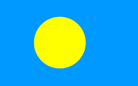
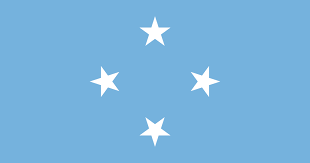

Australia (Oceania) is the smallest continent by land area and is often referred to as Oceania when including the Pacific islands.
It is known for its unique wildlife, including species found nowhere else, like kangaroos, koalas, and the platypus.
The Great Barrier Reef, off the coast of Australia, is the world’s largest coral reef system and a UNESCO World Heritage Site.
Oceania includes a diverse range of cultures, from the Aboriginal peoples of Australia to the Polynesian cultures of the Pacific islands.
Australia has a highly developed economy, with strengths in mining, agriculture, and tourism, and is known for its high quality of life.
The continent has a mix of modern cities like Sydney and Melbourne, known for their iconic landmarks such as the Sydney Opera House and the Harbour Bridge.
The region’s remote islands, such as Fiji and Tahiti, are famous for their stunning beaches, rich marine life, and vibrant cultural traditions.
day1: Introduction to Oceania

This image shows some of the beautiful islands we will explore in Oceania.
Welcome to Oceania
Oceania is a region filled with thousands of islands spread across the central and South Pacific Ocean. It is divided into four main areas: Australasia, Melanesia, Micronesia, and Polynesia. Each area has its own unique cultures, languages, and landscapes, from the bustling cities of Australia to the remote beaches of Micronesia.
Regions of Oceania
- Australasia: Includes Australia and New Zealand, known for their diverse wildlife and modern cities.
- Melanesia: Features countries like Fiji and Papua New Guinea, with rich cultural traditions and tropical islands.
- Micronesia: Consists of small islands such as the Federated States of Micronesia and Palau, famous for their beautiful marine life.
- Polynesia: Encompasses a vast number of islands, including Hawaii, Samoa, and Tonga, known for their stunning landscapes and vibrant cultures.
Over the next few days, we'll explore Australasia, Melanesia, and Micronesia in more detail.
Australia
Australia is famous for its outback, kangaroos, and the Sydney Opera House.
Sydney is one of Australia's biggest cities, known for its beautiful harbor.
New Zealand

New Zealand is known for its breathtaking mountains and friendly people.
Auckland is the largest city in New Zealand, surrounded by beautiful beaches and islands.
Fiji
Fiji is famous for its crystal-clear waters, coral reefs, and tropical weather.

Suva is the capital of Fiji, located on the island of Viti Levu.
Did you know?
Oceania is home to the Great Barrier Reef, the largest coral reef system in the world.
New Zealand was the first country to give women the right to vote in 1893.
Australia is both a country and a continent, known for its unique wildlife like koalas and kangaroos.
Fiji has over 330 islands, but only about 100 are inhabited by people.
The Pacific Islands in Oceania are some of the most remote places in the world.
day 2: Exploring Australasia

Map of Australasia.
Introduction to Australasia
Australasia is a region of Oceania that includes Australia, New Zealand, and neighboring islands in the Pacific Ocean. This part of the world is known for its diverse wildlife, stunning natural scenery, and vibrant cultures. From kangaroos and koalas in Australia to the Maori traditions of New Zealand, Australasia is a place of wonder and adventure.
Big Cities
The biggest cities in Australasia include Sydney, Melbourne, Brisbane, and Auckland. These cities are known for their modern skylines, cultural festivals, and famous landmarks. Sydney's Harbour Bridge and Melbourne's Federation Square are must-see spots, while Auckland is known as the "City of Sails" due to its beautiful harbors.
Famous Places
Australasia is home to many famous places that attract visitors from all over the world. The Great Barrier Reef in Australia is the largest coral reef system on the planet, teeming with marine life. New Zealand's Fiordland National Park offers breathtaking fjords and mountains, while Australia's Uluru is a sacred site for Indigenous Australians, known for its massive sandstone monolith.
Culture and Traditions
Australasia has a rich cultural heritage. In Australia, the Aboriginal culture is one of the oldest on Earth, with a history dating back over 65,000 years. In New Zealand, the Maori culture is celebrated through traditional dances, carvings, and language. Festivals like Australia Day and Waitangi Day in New Zealand bring people together to celebrate their national pride.
Heroes and Icons
Heroes from Australasia include Sir Edmund Hillary, who was the first person to reach the summit of Mount Everest. Steve Irwin, known as the "Crocodile Hunter," was famous for his work with wildlife and his love for animals. Another notable figure is Cathy Freeman, an Australian sprinter who won a gold medal in the 2000 Sydney Olympics, making her a national icon.
Now You're Ready to Take the Quiz!
Head over to the home page to get started with your first quiz!
Countries, Their Flags, and Capital Cities in Australasia
| Country | Flag | Capital City |
|---|---|---|
| Australia |  |
Canberra |
| New Zealand |  |
Wellington |
| Fiji |  |
Suva |
| Papua New Guinea |  |
Port Moresby |
| Samoa |  |
Apia |
| Tonga |  |
Nuku ʻalofa |
| Palau |  | Ngerulmud |
| Vanuatu |  |
Port Vila |
Did you know?
Australia is home to 21 of the world's 25 most venomous snakes, but don't worry—they prefer to avoid humans!
New Zealand is home to more sheep than people, with a ratio of about 6 sheep for every person.
Fiji is made up of over 300 islands, but only about 100 of them are inhabited by people.
Papua New Guinea has over 800 languages spoken across the country, making it one of the most linguistically diverse places in the world.
Vanuatu is known for its land diving tradition, where men jump from tall wooden towers with vines tied to their ankles—a precursor to modern bungee jumping!
day 3: Exploring Melanesia

malanesian people.
Introduction to Melanesia
Melanesia is a beautiful part of Oceania made up of many islands. It is known for its stunning beaches, lush forests, and rich culture. The people here live close to nature, and their traditions have been passed down for generations.
Big Cities
Melanesia is home to several big cities like Port Moresby in Papua New Guinea, Honiara in the Solomon Islands, and Suva in Fiji. These cities are full of life, with colorful markets, traditional dances, and warm, welcoming people.
Countries and Their Unique Features
Fiji

Fiji is famous for its crystal-clear waters and beautiful coral reefs.
Suva, the capital city of Fiji, is a bustling hub of culture and commerce.
Papua New Guinea
The highlands of Papua New Guinea are home to many indigenous tribes with unique cultures.

Port Moresby, the capital, is a city with a rich history and vibrant cultural scene.
Solomon Islands
The Solomon Islands are known for their unspoiled natural beauty and friendly communities.

Honiara, the capital, is a gateway to the rich cultural heritage of the islands.
Vanuatu

Vanuatu is famous for its active volcanoes and adventurous spirit.

Port Vila, the capital, is a charming city with a mix of traditional and modern influences.
New Caledonia

New Caledonia is known for its beautiful lagoon, one of the largest in the world.

Nouméa, the capital, is a vibrant city with French influences and tropical charm.
West Papua

West Papua is known for its dense rainforests and diverse wildlife.

Manokwari, the capital, is a city rich in culture and natural beauty.
Countries, Their Flags, and Capital Cities in Melanesia
| Country | Flag | Capital City |
|---|---|---|
| Fiji | |
Suva |
| Papua New Guinea | |
Port Moresby |
| Solomon Islands |  |
Honiara |
| Vanuatu | |
Port Vila |
| New Caledonia |  |
Nouméa |
| West Papua | Manokwari |
Did You Know?
Did you know that Melanesia is home to some of the most diverse languages in the world? Papua New Guinea alone has over 800 languages!
The coral reefs in Melanesia are among the most beautiful and diverse on the planet, attracting divers from all over the world.
Vanuatu is known for its traditional land diving ceremonies, where people jump from tall wooden towers with only vines tied to their ankles!
New Caledonia's lagoon is a UNESCO World Heritage site, celebrated for its exceptional marine life.
West Papua is part of the "Coral Triangle," an area known for having the highest marine biodiversity in the world.
Day 4: Exploring Micronesia

Introduction to Micronesia
Micronesia is a group of small islands spread across the Pacific Ocean. These islands are known for their stunning beaches and rich marine life.
Big Cities
Some of the main cities in Micronesia are Palikir, Majuro, and Tarawa. These cities are small but have lots of interesting things to see.
Famous Places
Micronesia has famous places like the ancient city of Nan Madol, the diving spots in Chuuk Lagoon, and the Rock Islands of Palau.
Culture
People in Micronesia speak many languages. They celebrate traditional dances and enjoy foods like breadfruit and fish.
Heroes
Heroes from Micronesia include Bailey Olter from the Federated States of Micronesia, who was a famous leader, and Lazarus Salii from Palau, who helped his country gain independence.
Countries, Their Flags, and Capital Cities in Micronesia
| Country | Flag | Capital City |
|---|---|---|
| Federated States of Micronesia |  | Palikir |
| Kiribati |  |
Tarawa |
| Marshall Islands |  |
Majuro |
| Nauru |  |
Yaren (de facto) |
| Palau | Ngerulmud | |
| Guam | Hagåtña | |
| Northern Mariana Islands | Saipan |
Federated States of Micronesia


Kiribati


Marshall Islands


Nauru

Palau


Guam


Northern Mariana Islands

Did you know?
üå¥ The Federated States of Micronesia is made up of over 600 islands, each offering unique natural beauty.
üêü Kiribati is one of the most isolated countries in the world, and its atolls are spread over 3.5 million square kilometers of ocean.
üèùÔ∏è The Marshall Islands are home to the world's largest atoll, Kwajalein, which is part of the Republic of the Marshall Islands.
ü¶Ö Nauru is the third smallest country in the world by land area, with only 21 square kilometers.
üêö Palau's Rock Islands are a UNESCO World Heritage site, known for their incredible biodiversity.
üå∫ Guam is the largest and southernmost island in the Mariana Islands archipelago, known for its rich history and vibrant Chamorro culture.
Summary of Our Journey Through Oceania
Recap of Our Adventure
Over the past few days, we've traveled through the diverse and beautiful regions of Oceania. We started in Australasia, exploring the vibrant cities and famous landmarks of Australia and New Zealand. We then ventured into Melanesia, where we experienced the rich cultural traditions and stunning natural beauty of countries like Fiji and Papua New Guinea. Finally, we discovered the small but enchanting islands of Micronesia, known for their unique marine life and historic sites.
Highlights of Our Journey
- Australasia: The Great Barrier Reef, Sydney Opera House, and friendly wildlife.
- Melanesia: Coral reefs of Fiji, volcanoes of Vanuatu, and traditional dances.
- Micronesia: Ancient city of Nan Madol, Chuuk Lagoon diving spots, and Rock Islands of Palau.
Celebrating Oceania's Diversity
Oceania is a region rich in diversity, with each area offering its own unique cultures, languages, and landscapes. Whether it's the bustling cities of Australasia, the cultural villages of Melanesia, or the tranquil islands of Micronesia, there's something special to discover in every corner of Oceania.
Flags of Oceania
Here are some of the flags of the countries we explored:
| Country | Flag | Capital City |
|---|---|---|
| Australia | |
Canberra |
| New Zealand | |
Wellington |
| Fiji | |
Suva |
| Papua New Guinea | |
Port Moresby |
| Federated States of Micronesia | Palikir | |
| Palau | Ngerulmud |
Did you know?
üåè Australia is the only country that is also a continent, home to unique wildlife like kangaroos and koalas.
üåã New Zealand is known for its active geothermal areas, including the famous Rotorua geysers.
ü™∏ Fiji is considered the "Soft Coral Capital of the World" due to its vibrant underwater life.
üèîÔ∏è Papua New Guinea has one of the highest rates of linguistic diversity, with over 800 languages spoken.
üå∫ The Federated States of Micronesia consists of four states spread across the Western Pacific Ocean.
üõ∂ Palau is known for its pristine marine environment, making it a top destination for diving enthusiasts.
Now You're Ready to Take the Second Quiz!
Head over to the home page to get started with your Second quiz as well as General test Exam!